竜門岳・大和葛城山～金剛山
| 日付 | 2025年12月30日（火） - 2025年12月31日（水） | ||||
|---|---|---|---|---|---|
| 山域 | 近畿の山 | ||||
| メンバー | 単独 | ||||
| 山行形態 | 日帰り | ||||
| アクセス | 車 | ||||
| ルート (Map1) |
|
【1日目】【2日目】
今年は子供たちが受験なので帰省せず、自分一人の帰省。
せっかくなので1泊増やして、関西の山に登ることにする。
1日目
一如庵という蕎麦屋で昼食をとる。
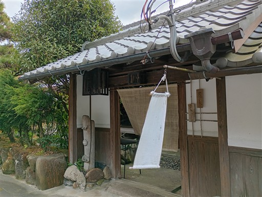
高見山に行こうと考えていたが、交通渋滞で時間が遅くなったのと
空模様も今一だったため、目的地を竜門岳に変更。
狭い林道を通って小さな駐車スペースに車を停める。標高290m。
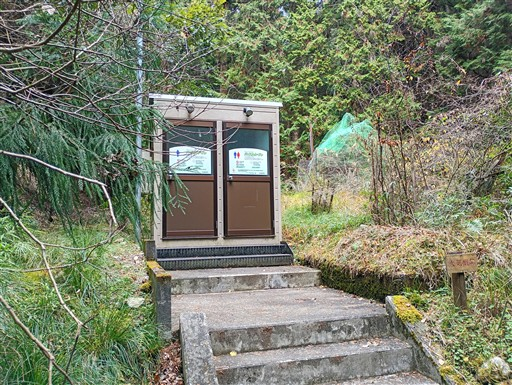
スギ林が広がる林道を歩いていく。
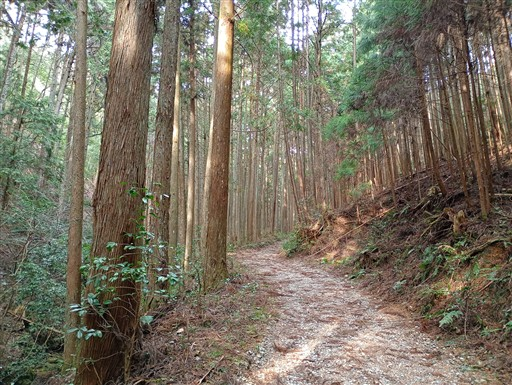
眼下にある竜門滝に寄り道する。
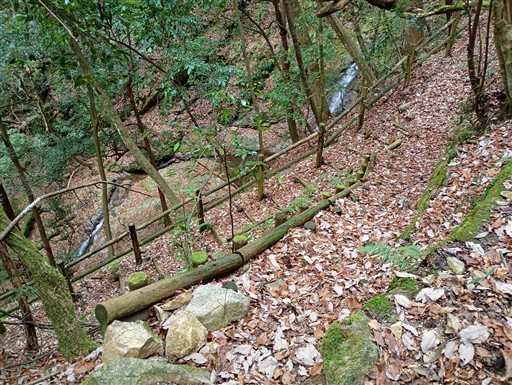
竜門の滝。何段かに分かれて流れ落ちている。
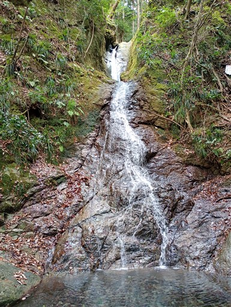
まだまだ林道は続く。こんなに川と近い林道は初めて見た。
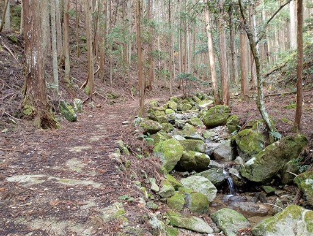
延々と続く植林地帯。道が細くなって、ようやく登山道らしくなってくる。
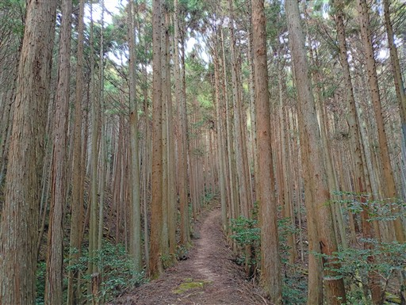
倒木がちょっと邪魔だ。
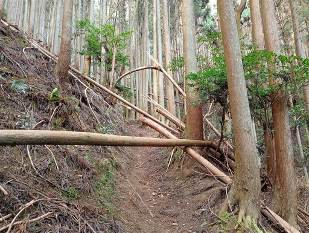
植林地帯から解放されて自然林が広がるが、長くは続かない。
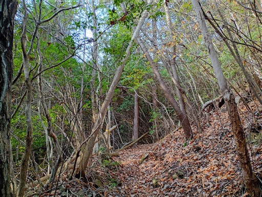
竜門岳山頂に到着。標高904m。
山頂に小さな神社が建てられている。
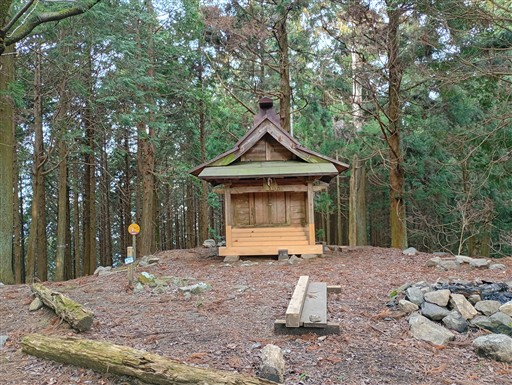
中はこのような感じ。鏡餅があり、正月の準備万端だ。
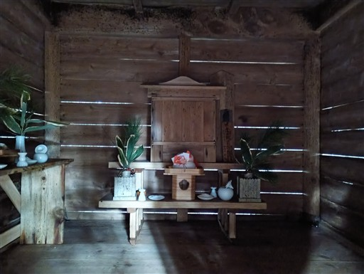
焚火をした跡がある。最近山火事が多いのでちょっと心配だ。
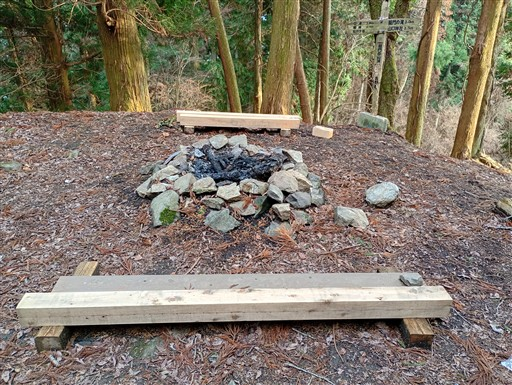
一応、神社の下に消火器が置かれている。
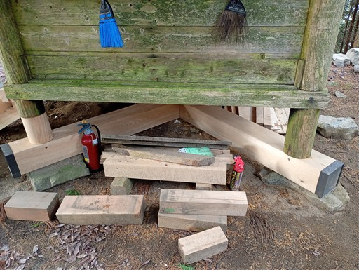
Wikipediaには「展望は西方に開けている」と書かれているが、
スギに囲まれていて大して展望は広がらない。
時間が遅いので、休憩せずに下山する。
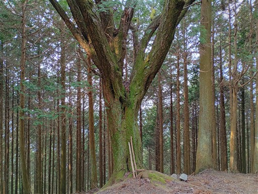
途中で龍門寺塔跡に寄り道する。
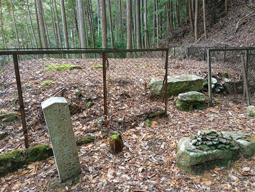
柱が建っていた礎石がある。奈良時代建立の寺院で、応仁の乱の頃に廃寺となったようだ。
延々と植林地帯が広がり展望も広がらない地味な山だった。
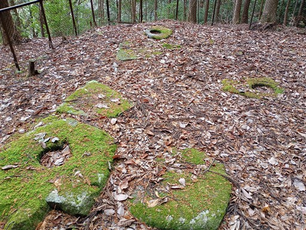
下山したら、御所の郷に移動。本日はここで車中泊する。
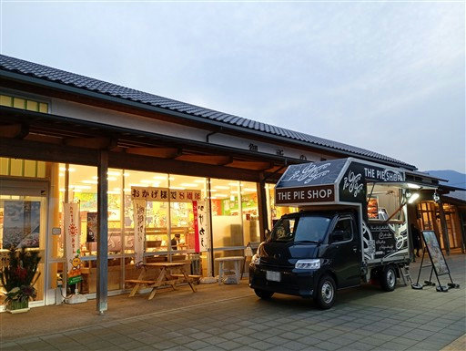